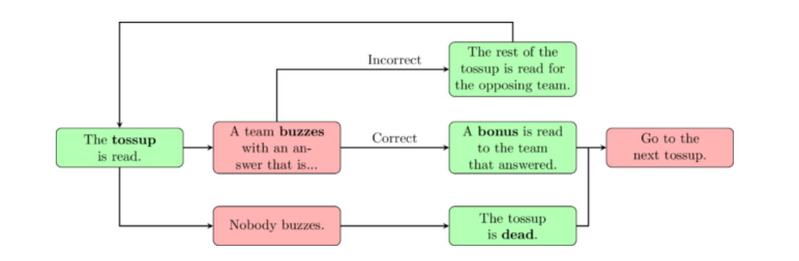

Now that we know the motivations for quizbowl, it is time to see what a quizbowl match actually looks like. Quizbowl is usually played between two teams of four players (some, like the Illinois Scholastic Bowl, have teams of five). A moderator will face both teams and read the questions to players. Players are not allowed to speak or confer with their teammates while a tossup is being read. If a player answers a tossup correctly, then their team gets 10 points and the right to answer the corresponding bonus question. If a player answers incorrectly, then their team loses the right to answer the tossup. If no team is able to answer the tossup, then the tossup goes dead and the moderator proceeds to the next tossup. Below is a diagram that illustrates the flow of play.

There is one more outcome that is not covered by the above diagram: a prompt. You can read more about prompts and additional rules for handling ambiguity here.
Often, negative points are assigned to a team and/or player that gives an incorrect answer (called a neg). Teams are also often given extra points for answering early in a question. This type of buzz is known as a "power". Powers and negs both have defenders and detractors; some argue that they are unnecessary fluff, while others argue that they make the game more engaging and allow for more informative scorekeeping. Statistics are a big part of quizbowl, and they are meticulously tracked for almost every tournament. You can find the latest quizbowl statistics at hsquizbowl.org.
A typical match takes 30 minutes to an hour depending on how quickly questions are read and answered. There are typically strict timing rules assigned to each component of the game, which vary by format. An example set of timings would be three seconds to answer a tossup after buzzing, eight seconds to answer a bonus part, and five seconds to answer a tossup after it has been read in its entirety. Some formats, like the NAQT High School National Championship Tournament, even use time to control the length of the match. In these formats, the match or half will end after the next tossup-bonus cycle when time expires. But in most cases, the match will end after a certain number of tossup-bonus cycles (almost always 20, but sometimes more).
Most quizbowl rounds are played in tournaments, where a set of teams compete for a full day to determine a winner. A pooled round robin followed by a playoff (~9 rounds in total) is one of the most common formats. However, quizbowl is also played in a league format, where pairs of teams meet on a schedule to play a couple rounds at a time. These events are usually more local in scope and sometimes correspond to school conferences. In both cases, the questions are pulled from a large document called a question set, and no two question sets are exactly alike. Tournament hosts are responsible for choosing a vendor to purchase high quality questions from (or producing the set themselves).
You might be wondering what topics are included in a question set. There is no definite answer, but the quizbowl community agrees that question set topics should remain roughly constant from round to round. So if there are four history tossups in Round 1, then there should be four history tossups in Round 2. Even though it is impossible to have perfectly uniform topics in each round, quizbowl strives to have as little variation as possible. The result is a predictable game. It is much easier for teams to strategize and improve when the wild variation present in trivia is taken away. The precise number of questions per topic in each round is called the distribution.
But all of this is only true for standard academic tournaments. There are many subject-specific and novelty tournaments with wildly varying distributions and rules. Ultimately, the exact gameplay depends on whoever is in charge. And this is because quizbowl is a decentralized activity with lots of different implementations. Many people are convinced that their way of doing quizbowl is the correct one, but there is no 100% "right way to do quizbowl". As for what way seems best, well, that is a call you will have to make yourself. Quizbowl is a young and vibrant activity that is developing every day, and the diversity of ideas is part of what makes it so great! Go explore what's out there and see if you have any thoughts of your own.
This concludes our little guide. I hope you enjoyed this brief tour of a truly unique activity!! If you'd like to go back to the beginning of this guide, click here. If you've never played quizbowl before, we'd recommend getting your feet wet before reading on. But once you've gotten some playtime under your belt, why not learn how to write some questions? You can start our companion How to Write Questions guide with Part I: Notability, Specificity, and Coherence. And if you want to review some key terms from this guide, check out our glossary. Thanks for reading!